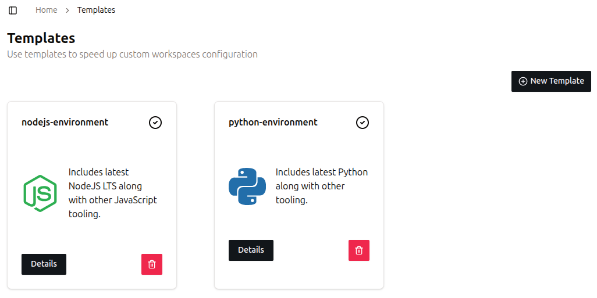
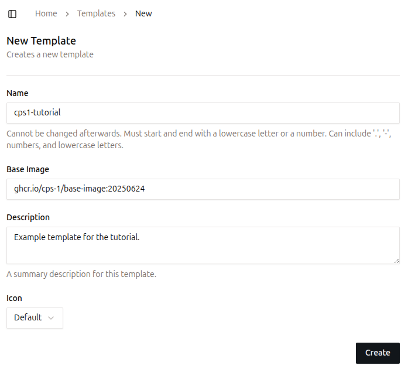
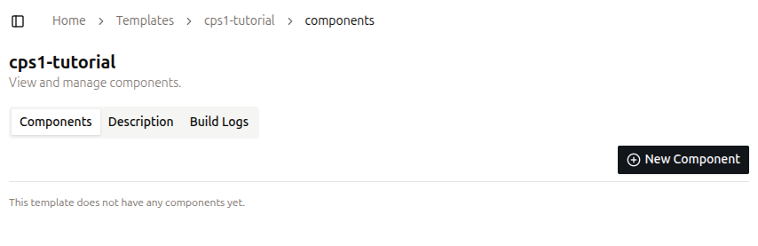
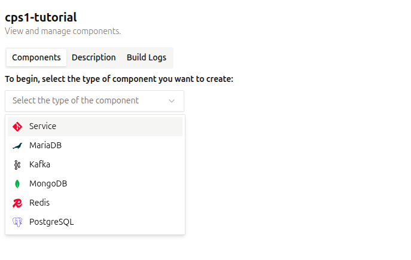
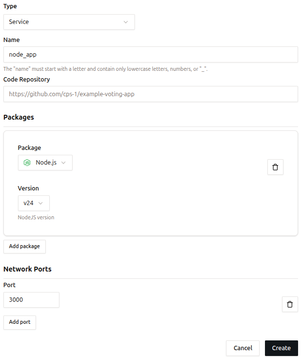
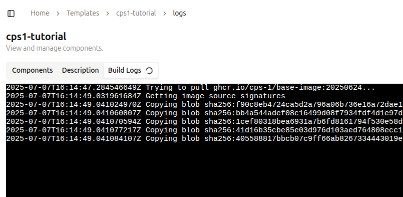
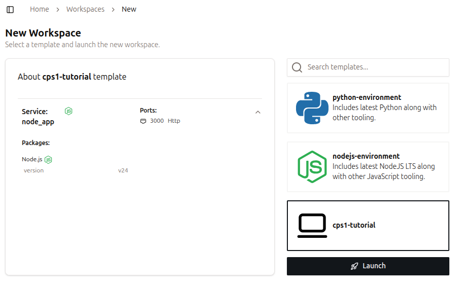
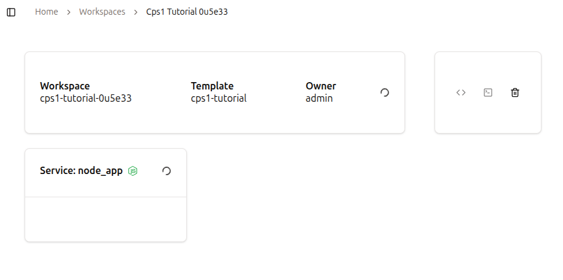
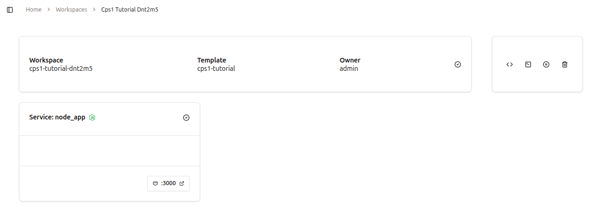

Quickstart Guide
Welcome! In this tutorial, you’ll install CPS1 locally and learn how to create a new Template and provision a Workspace!
1. Prerequisites
Ensure the following tools are installed on your system:
2. Running the installer
For proof-of-concept scenarios, we provide an installation script that installs CPS1 locally, without requiring a Kubernetes cluster.
Run the command bellow in your system:
curl https://helm.cps1.tech/cps1-installer.sh | bash
After the installation finishes, you can access CPS1 at http://cps1.localhost:3001.
For a production grade installation, follow the Production Installation guide.
3. Logging into your CPS1 instance
When a fresh installation is done, there are no users created.
Once you access CPS1 for the first time, it will prompted you to create an Admin user account.
Provide a username and password and you are ready to create your first Template and Workspace!
4. Creating a Template in CPS1
Every Template starts with a base container image. During the Template build process, CPS1 layers your custom configurations on top of this image, enabling consistent and reproducible environments.
Follow these steps to create a new Template:
- Navigate to the Templates page
In the left sidebar, under theEnvironmentssection, click onTemplates. - View your existing Templates
The page displays all Templates currently available in your CPS1 instance, as shown below:
 - Create a new Template
Click theNew Templatebutton at the top-right of the page. - Fill out the Template form
Provide the following information:- Name: A descriptive name for your Template. Let's use
cps1-tutorial. - Base image: CPS1 provides a base image that is compatible with many built-in packages. You can leave this as is.
- Description (optional): Add a short description to help others understand the Template’s purpose.
- Icon (optional): Select an icon to visually identify the Template. 
- Name: A descriptive name for your Template. Let's use
- Save the Template
Click onCreateand you will be taken to the next step for adding Components.
5. Adding a Service Component to the Template
A Component is the smallest functional unit in a Template, representing a specific part of an application such as a backend service, frontend interface, or database.
Each Component reflects a distinct technology or service needed to assemble a complete development environment.
A Service is a Component that runs code, often exposing network ports for communication.
It is defined by three main attributes:
- Code Repository: Provides the source code to be cloned and executed in the Workspace.
- Packages: Install the necessary tools and runtimes into the final Template container image.
- Network Ports: Enable internal and external communication for the Service.
Follow these steps to add a Service Component:
- Add a new component
Click onNew Component.  - Select the Service component
On the Components tab, selectService.  - Fill out the Service form
- Name: A descriptive name for the Service. Let's use
node_app. - Code Repository (optional): Git URL to a repository. You can leave it empty. Note: CPS1 requires access to the repository for cloning it. Refer to Git Repository Integration for further instructions.
- Packages (optional): Tools and languages that are installed on top of the Template base image. Select
Node.jsand then versionv24. - Network Ports (optional): Ports that will be made accessible from outside the Workspace. Let's use
3000. 
- Name: A descriptive name for the Service. Let's use
- Create the Service
ClickCreateto start the build process. - Template build process
CPS1 will build a container image to use as a starting point for new Workspaces. You can follow the build process on theBuild Logstab.  - When the build finishes, move on to create a Workspace.
6. Create a new Workspace
In CPS1, a Workspace is an ephemeral development environment created based on a given Template, with many additional capabilities compared to running locally on a developer’s laptop.
A Workspace operates entirely on your Kubernetes cluster where CPS1 is deployed. You don’t need to worry because CPS1 manages everything transparently, making Kubernetes operations invisible.
Follow these steps to create a new Workspace:
- Navigate to the Workspaces page
Go to theWorkspacespage in the left sidebar, under theEnvironmentssection. - Create a new Workspace
Click theNew Workspacebutton at the top-right of the page. - Choose a Template
Click thecps1-tutorialtemplate on the right side of the page and then click theLaunchbutton at the bottom-right.  - Workspace provisioning
You will be redirected to the Workspace detail page, which shows that your Workspace is being provisioned. 
After a few moments, the Workspace will be ready to use.
The Workspace is accessible using the integrated Web IDE directly from a web browser or using an SSH connection.
Services configured in the Template that expose a network port will be accessible via a URL automatically generated by CPS1.
To access the Workspace, navigate to the top-right of the page, where you can find the workspace control operations:
- Open Web IDE: Opens the Web IDE in a new tab in your browser.
- Access with SSH: Copies an SSH command to the clipboard to access the Workspace.
- Pause Workspace: Pauses the Workspace, stopping all processes. Data is persisted, so this is a safe operation.
- Destroy Workspace: Finishes all processes on the Workspace and deletes all data.

Workspace lifecycle
Make sure all your code is committed and pushed to the git repository before destroying a Workspace.
You can disconnect and reconnect to an active Workspace without affecting its running processes.
Additionally, you can stop and restart a Workspace without losing any changes you have made.
If you encounter any issues or have feedback, please open an issue in our repository: https://github.com/cps-1/cps1